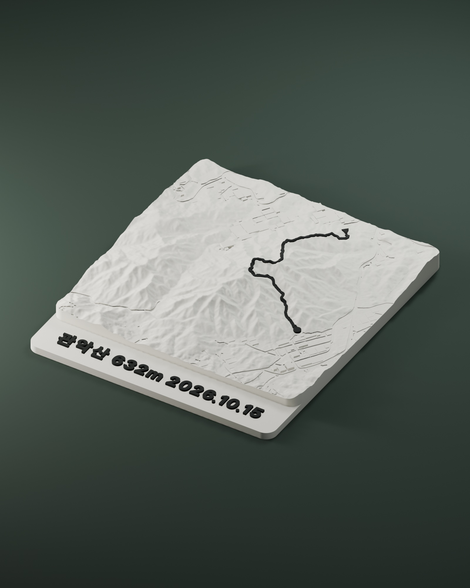
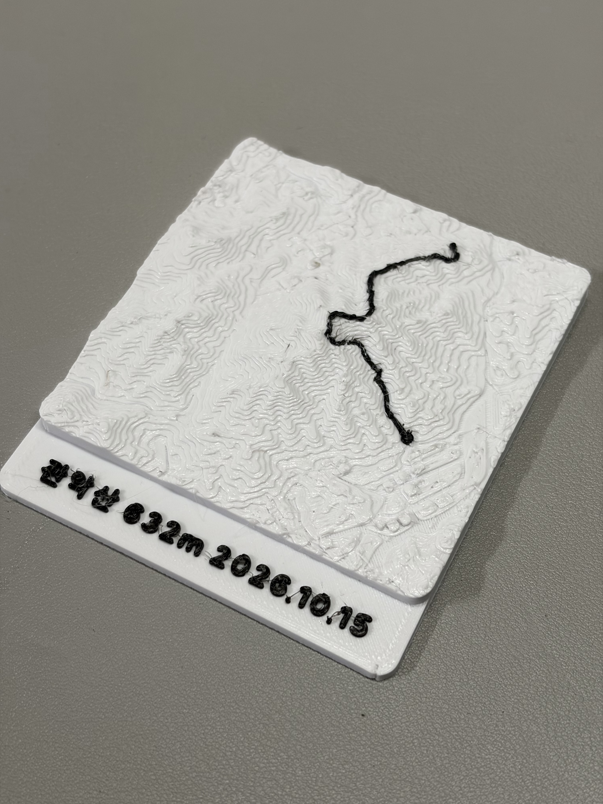

제품 렌더

GWANAKSAN · 관악산
함께 오른 그날을
작은 지형으로.
관악산의 능선 위에 등산 경로와 날짜를 담습니다. 다녀온 날을 책상 위에 남겨보면 어떨까요?
39,000원경로·날짜·국내 배송 포함
- 구성
- 관악산 지형 오브제 1개
개인 경로 1개 + 날짜 1개 + 기본 포장 - 크기
- 지형 7 × 7cm
명판 포함 약 7 × 8.2cm - 색상·소재
- 아이보리 지형 + 검정 경로·글씨
PLA, 3D 프린트
사진의 경로와 날짜는 예시입니다. 이번 조사는 관악산 지형에 개인 경로와 날짜를 넣는 조건입니다.
이 조건에 대한 의견 남기기실제 출력물도 확인하세요
위 이미지는 제품 형상을 보여주는 렌더입니다. 아래는 관악산 시제품의 실제 출력 사진으로, 소재의 질감과 마감을 확인할 수 있습니다.

렌더와 실물의 표면 표현에는 차이가 있습니다. 지형은 7 × 7cm이며 명판을 포함하면 약 7 × 8.2cm입니다.
지금은 판매·결제·예약금을 받지 않습니다. 제작 일정과 출시 여부는 조사 후 정합니다.
01 · 구매 의향
이 구성과 가격이라면 어떠신가요?
제품 렌더와 실제 사진으로 본 7cm 관악산 오브제에 개인 경로·날짜·국내 배송을 포함한 39,000원 기준입니다.
02 · 출시 소식
제작 소식을 받고 싶다면
의견 제출과 별개인 선택 항목입니다. 사전 신청은 구매나 예약이 아니며 결제되지 않습니다.
조사 안내
가격 열람과 유입 경로 집계에 무작위 브라우저 ID를 사용합니다. 같은 브라우저의 중복 방문을 구분하며, 브라우저 데이터를 지우면 새 ID가 만들어집니다. 다른 기기의 동일인을 완전히 구분할 수는 없습니다.
조사 기간: 2026년 11월 11일~12월 2일 오전 1시 28분(한국시간). 기간이 끝나면 이 페이지의 응답 접수가 멈춥니다.